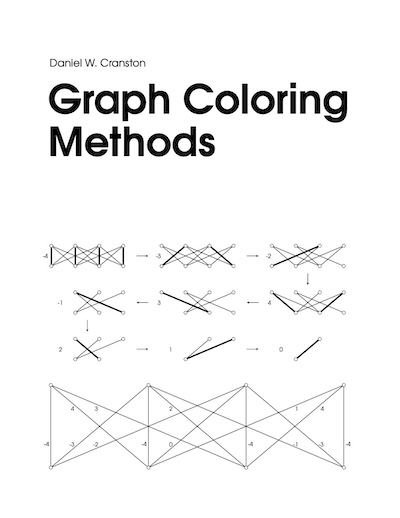

|
Graph Coloring Methods Daniel W. Cranston
|
|||
|---|---|---|---|
This is a graduate textbook about how to color graphs. Each chapter studies a single method, and presents numerous examples applying that method, generally in order of increasing difficulty. The book is designed to be suitable for a topics course in graph coloring, as well as self-study. The chapters are listed below.
The book is (and always will be) freely available for download. It is released under a Creative Commons Attribution-NonCommercial-NoDerivatives 4.0 Internation License. License details are available at https://creativecommons.org/licenses/by-nc-nd/4.0. |

|
||